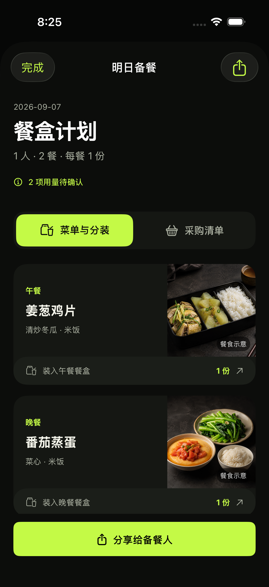
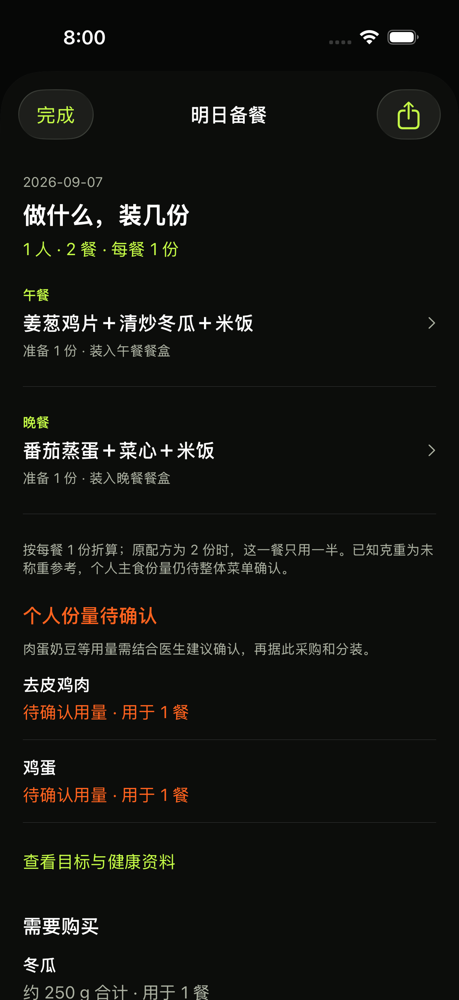
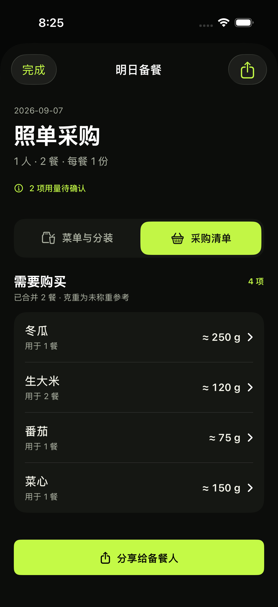
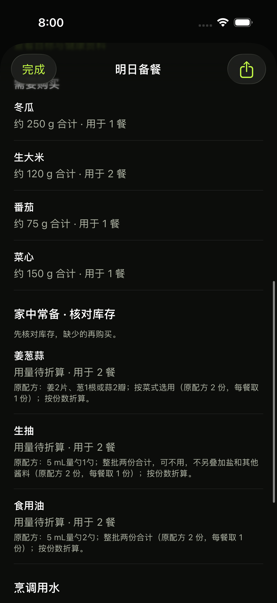

01 / 菜单与分装
午餐、晚餐各一张餐盒卡；份数直接可见，待确认用量保留首屏入口。

查看修改前

02 / 采购清单
食材和两餐合计数量左右对齐。配方说明、库存与烹调用水按需展开。

查看修改前

餐食图片、清楚的分装卡、对齐的采购数量。用量说明和家中常备按需展开。
返回整组界面 →午餐、晚餐各一张餐盒卡；份数直接可见，待确认用量保留首屏入口。


食材和两餐合计数量左右对齐。配方说明、库存与烹调用水按需展开。

